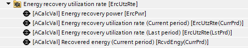
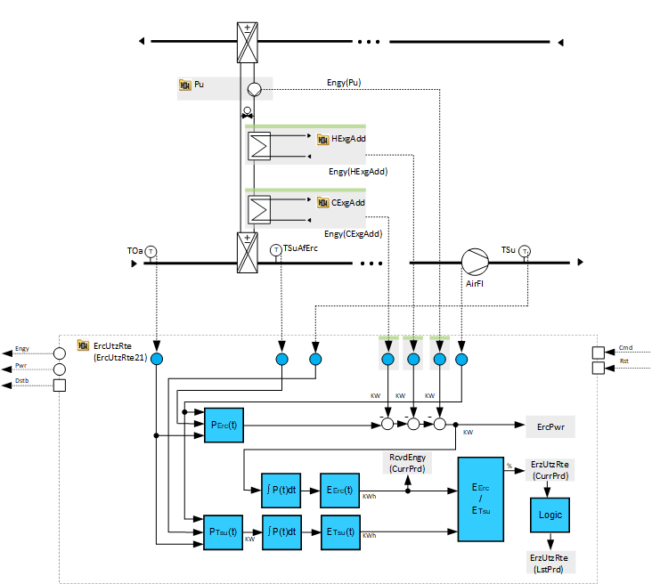
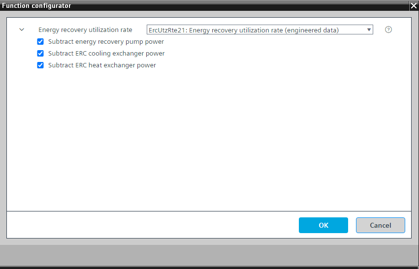

[ErcUtzRte21] 能量回收利用率
Program block, name / node subtype: [ErcUtzRte21] Energy recovery utilization rate
Library hierarchy: Ventilation and air conditioning functions
Family: ErcUtzRte
项目树 | 图表 |
|---|---|
|
 |  |
Configurator


程序块存储在没有 I/Os. 的库中 使用auto-create and auto-connect函数创建 I/Os 和 /or 将它们连接到接口块，例如 R_A、CMD_B。或者，从包含库中预定义 I/Os 的文件夹中取出 I/Os，并从工厂中取出 /or，并将它们连接到接口块。
计算每年能量回收的利用率。
ErcUtzRate21利用风量流量以及外界空气与能量回收后的温度之间的温差来计算能量回收功率。该功率在一段时间内积分并计算恢复的能量。以类似的方式计算达到供气温度所需的外部空气加热总能量/cooling。
%中的能量回收利用率是通过将回收的能量除以总能量来计算的。当前期间（即一个日历年）的结果是不断计算的。年底，结果被保存，计算被重置。
该程序块具有以下可选功能：
Option: Subtract energy recovery pump power
将此选项用于绕行线圈 ERC，例如 Erc23 或 Erc24，及其泵的功率测量。它从能量回收功率中减去泵功率。
Option: Subtract ERC cooling exchanger power
将此选项用于带有热和冷交换器（例如 Erc25）的绕行线圈 ERC，以及用于额外冷却的交换器的功率测量。
Option: Subtract ERC heat exchanger power
将此选项用于带有热和冷交换器（例如 Erc25）的绕行线圈 ERC，以及用于额外加热的交换器的功率测量。
如果安装了所需的温度传感器，尤其是TSuAfErc，并且已知送风的风量流量，则ErcUtzRate21可用于计算任何类型的能量回收系统的利用率。例如，对于Erc23和Erc24，仅保留选项“减去Erc泵功率”。对于 Erc21 和 Erc22，删除所有三个选项。
必须根据项目要求测量可选功率并计算/or。
姓名 | 描述 | 类型 | 报警/通知类 | 趋势/类型 | |
|---|---|---|---|---|---|
|
ErcPwr | Energy recovery power | ACalcVal: Analog calculated value | N/A | 是的，3 | |
RcvdEngy(CurrPrd) | Energy recovery (Present period) | ACalcVal: Analog calculated value | N/A | 是的，3 | |
ErcUtzRte(CurrPrd) | Energy recovery utilization rate (Present period) | ACalcVal: Analog calculated value | N/A | 是的，3 | |
ErcUtzRte(LstPrd) | Energy recovery utilization rate (Last period) | ACalcVal: Analog calculated value | N/A | 是的，4 | |
描述 |
|---|
|
Subtract energy recovery pump power |
Subtract energy recovery internal heat exchanger power |
Subtract energy recovery internal cooling exchanger power |
如果安装了所需的温度传感器，ErcUtzRte21 可用于计算任何类型的能量回收系统的利用率，特别是TSuAfErc，并且送风的风量流量已知。
相应地调整选项。例如，对于 Erc23 和 Erc24 仅保留选项“Subtract energy recovery pump power”。对于 Erc21 和 Erc22，删除所有三个选项。
必须针对特定项目测量和/or 计算要删除的可选功率。